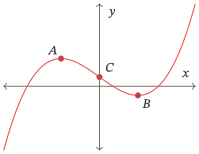
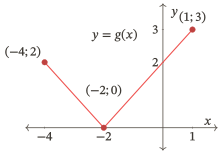
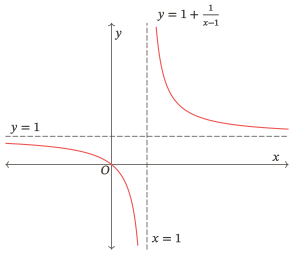
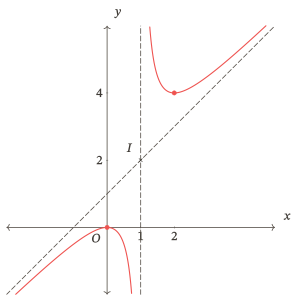
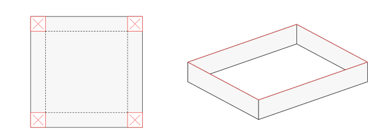
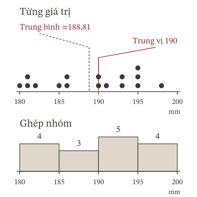
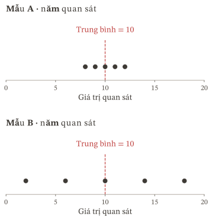

Đơn điệu và cực trị
Khi nào hàm số đồng biến, nghịch biến? Làm sao tìm cực trị? Tìm hiểu qua công thức, dấu đạo hàm, bảng biến thiên và đồ thị.
Tổng quan
Khi nào hàm số đồng biến, nghịch biến? Làm sao tìm cực trị? Tìm hiểu qua công thức, dấu đạo hàm, bảng biến thiên và đồ thị.
Tổng quan
Tìm giá trị lớn nhất, nhỏ nhất trên một tập cho trước. Phân biệt chúng với cực trị và xác định những điểm mà hàm số nhận các giá trị ấy.
Tổng quan
Đọc giới hạn để xác định tiệm cận đứng, ngang và xiên; xét đúng tập xác định và phân biệt giới hạn từ bên trái, bên phải, khi biến tiến tới âm vô cực hoặc dương vô cực.
Tổng quan
Kết hợp đạo hàm, giới hạn và tiệm cận để khảo sát sự biến thiên, vẽ đồ thị và kiểm tra tính đối xứng của hàm số.
Tổng quan
Dùng đạo hàm để giải thích tốc độ thay đổi và giải bài toán tối ưu thực tế. Chọn đại lượng, lập mô hình, xét các giá trị biến được phép nhận và kiểm tra kết quả trong bối cảnh, kể cả lựa chọn nguyên.
Tổng quan
Đọc đúng dữ liệu, hiểu ý nghĩa của số trung bình, trung vị và mốt; chọn số đại diện phù hợp với câu hỏi và nhận biết giới hạn của kết quả khi dữ liệu được ghép nhóm.
Tổng quan
Hiểu độ trải của dữ liệu; tính khoảng biến thiên, khoảng tứ phân vị, phương sai và độ lệch chuẩn; so sánh đúng đơn vị, loại dữ liệu và phạm vi kết luận.
Tổng quanThử một từ ngắn hơn hoặc chọn “Tất cả”.